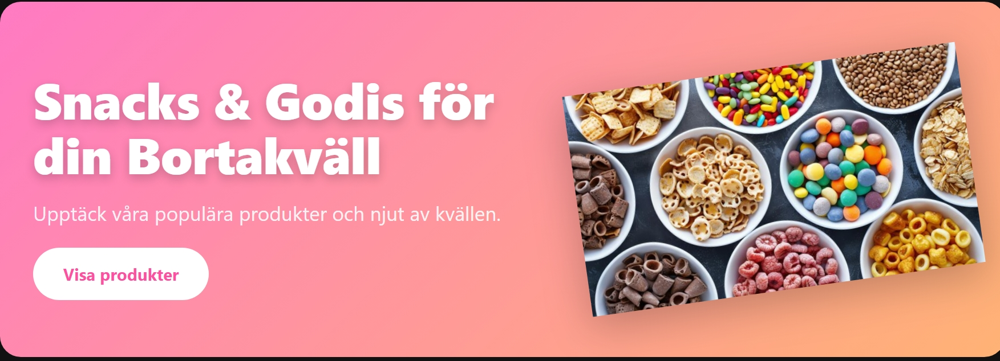
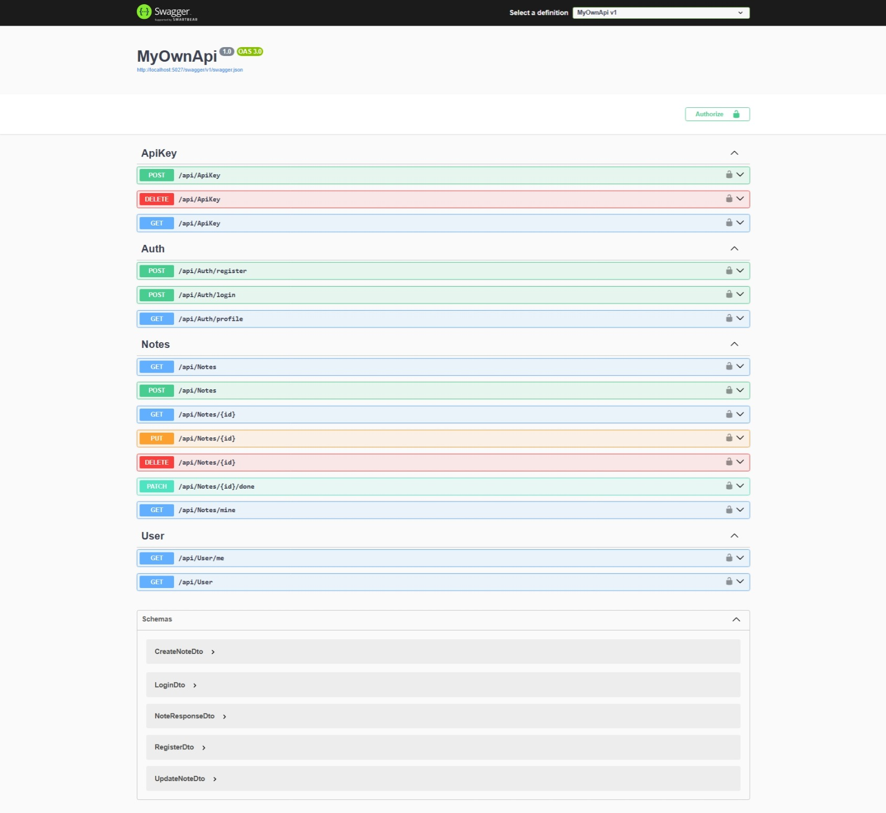

Frontend & Web Applications
Bortakväll Webshop
A React and TypeScript webshop that retrieves product data from a REST API and includes product pages, a checkout flow, and order submission.
React · TypeScript · Vite · REST API
WELCOME TO MY IT PORTFOLIO
Developing practical skills in software testing, Web3 solutions, and cloud technologies.
View My ProjectsI am an aspiring IT professional with a background in education, administration, and business. I am currently developing my technical skills in software testing, Python programming, web development, and cloud technologies.
Through coursework and practical projects, I am building my understanding of how software is developed, tested, and delivered. I enjoy learning new technologies, solving problems, and turning ideas into practical solutions.
My previous professional experience has strengthened my communication, analytical thinking, and organisational skills. I aim to combine these strengths with my growing technical knowledge to contribute to meaningful IT projects and continue developing as a professional.
Technologies and tools I have explored through coursework and practical projects.
Python, pytest, Playwright, Gherkin, Postman
Python, Java, JavaScript, HTML, CSS, React, SQL
AWS, Docker, Git, GitHub, GitHub Actions
REST APIs, blockchain fundamentals, stablecoin payment concepts
A selection of my coursework and practical IT projects.

Frontend & Web Applications
A React and TypeScript webshop that retrieves product data from a REST API and includes product pages, a checkout flow, and order submission.
React · TypeScript · Vite · REST API

Full-Stack Development
A full-stack application combining a React frontend with a FastAPI backend and an SQLite database.
React · FastAPI · SQLite · Testing

Backend Development
A .NET backend project focused on REST API development and application security.
C# · ASP.NET Core · REST API
My professional background, technical education, and continuous learning in IT.
IT Experience
Previous Experience
Previous Experience
Cloud infrastructure, IAM, Docker, containerization, and serverless architecture.
Python, pytest, Playwright, Gherkin, and test automation in CI/CD pipelines.
Java, Spring Boot, React, JavaScript, HTML, CSS, SQL, and MySQL.
Interested in working together or discussing an IT opportunity? Feel free to get in touch.
I am open to opportunities in software testing, web development, cloud technologies, and IT support.
Send Me an Email